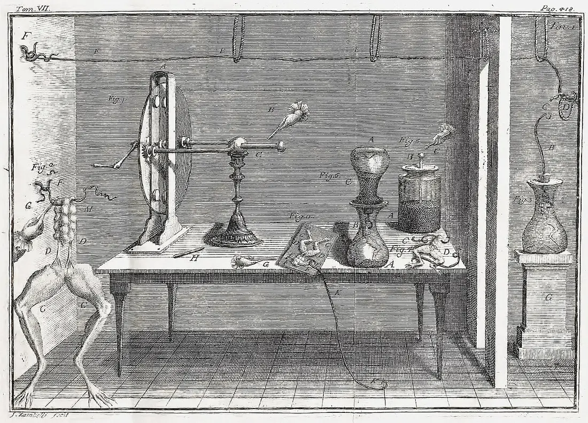
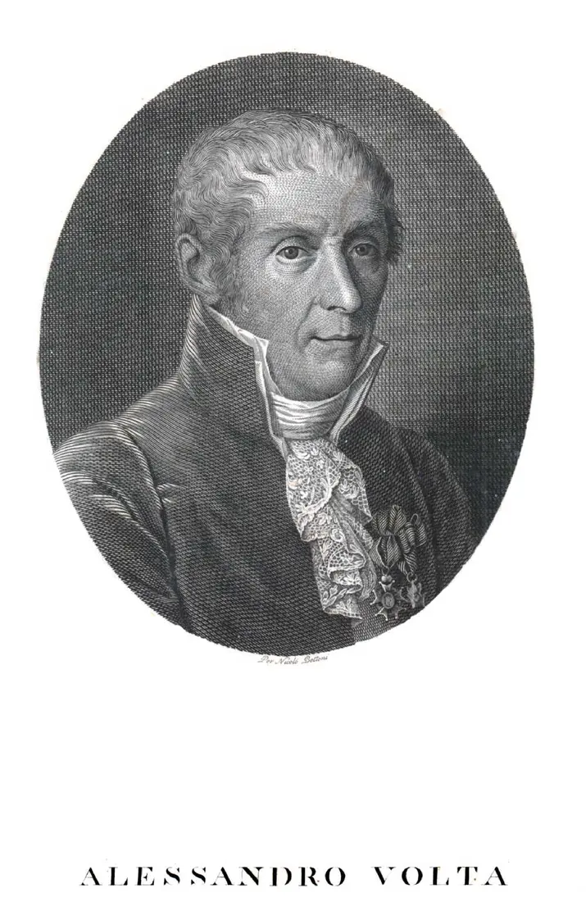
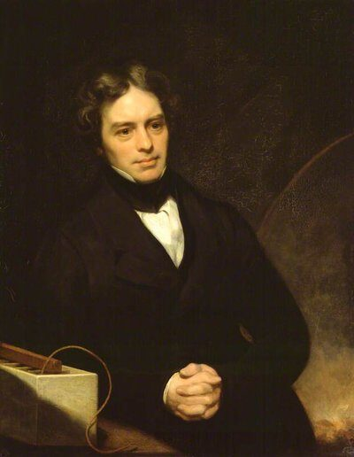
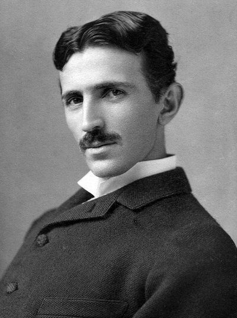

Atoms & chargeStatic vs. currentConductors & gridInteractive labs · All ages
Every spark, every lightning bolt, every phone charge comes down to the same tiny thing: electrons moving around. Explore how charge works using interactive atom, fluid-pressure, conductivity, 3D static, and grid models — then trace the 2,500-year detective story of how humans figured it out.
Everything in the universe — this screen, the air, your hand — is made of atoms. Every atom has a dense center (the nucleus) of positively charged protons and neutral neutrons, surrounded by cloud-like shells of negative electrons. Normally an atom has equal numbers of protons and electrons, so those opposite charges cancel out cleanly.
Electricity is simply electric charge on the move. Because electrons sit on the outside of atoms and weigh almost 2,000 times less than protons, outer electrons can jump between surfaces or drift from atom to atom along a wire. Nothing mystical is happening — just tiny charged particles responding to electrical push and pull.
Voltage Push3 V DC (coin cell)
Energy per unit charge
Power / Energy0.045 W (45 mW)
1 watt = 1 joule / sec
For younger learners
Think of electrons like tiny invisible marbles carried by every building-block atom around you. Rub two things together and some marbles hop across; connect a battery in a loop and those marbles roll smoothly through the wires like cars on a track.
For older learners
Charge is conserved and quantized (elementary charge e ≈ 1.602 × 10−¹⁹ C) — charge never appears from thin air, it only separates or flows. Voltage (joules per coulomb) provides the energy push, while electric current measures coulombs per second (amperes).
2. The Water Analogy: Voltage, Current, and Resistance
Once you know electricity is moving charge, you need words for how hard it is pushed, how fast it flows, and what slows it down. Physicists and electricians link these three quantities using the water-pipe analogy.
Voltage (volts, V)
The electrical "push" behind charges — like the water pressure created by a tall water tower. Higher pressure forces charge harder around any loop.
Current (amps, A)
The rate charge actually flows past a point — like liters per second passing through a pipe. Measured in amperes (1 A = 1 coulomb/s).
Resistance (ohms, Ω)
How much the path fights the flow — like a valve or tight constriction inside the pipe. Raising resistance lowers current for the same voltage.
Tower = voltage push · Valve = resistance · Wheel spin = current rate
Voltage (V)6 V
Push from source
Resistance (R)100 Ω
Path opposition
Current (I = V/R)60 mA
Charge flow rate
Power (P = V·I)360 mW
Work done on wheel
Quick Prediction Check: Keeping the valve fixed at 300 Ω, if you double Voltage from 6 V to 12 V, what happens to Current?
The exact relationship
All three obey Ohm's Law: voltage = current × resistance (V = I · R). Push harder or open the valve wider and current rises; pinch the valve tighter and current drops for the same voltage. Continue to Ohm's Law once you finish here.
3. Why Some Materials Carry Electricity and Others Don't
Resistance depends directly on atomic bonding. In metals, outer electrons detach effortlessly into a shared "electron sea" that drifts the instant voltage appears. In insulators, electrons stay tightly bound to host molecules — unless breakdown voltage is high enough to tear them loose.
Interactive Material Conductivity Bench
Test Current (at 6 V)2,400 mA
Bulb & ammeter response
Material ClassConductor (Metal)
Carrier behavior
Conductors
Copper, silver, gold, and aluminum have loose outer valence electrons that roam freely across atoms — giving very low resistance for wires and contacts.
Semiconductors
Silicon sits in between: nearly insulating when pure and cold, yet tunable on demand by heat, light, or trace impurities ("doping") — the secret behind every transistor.
Insulators
Rubber, glass, porcelain, and dry wood hold electrons in rigid covalent bonds — high resistance that keeps current safely inside cable insulation.
Why this matters for safety
Pure distilled water is actually a poor conductor, yet tap water, sweat, and body tissues contain dissolved salt ions that conduct far more easily than dry skin or air. That is why wet hands around live outlets dramatically reduce your skin resistance and raise shock risk.
4. Two Kinds of Electricity: Static vs. Current
Almost every electrical effect falls into one of two behaviors: charge piling up on surfaces until it leaps across a gap (static), or charge circulating continuously around a closed loop (current).
Static Electricity: Charge That Jumps
When two different materials rub together, whichever material pulls harder on outer electrons strips some away from the other. Opposite charges attract — pulling hair upward toward a balloon — until excess electrons finally find a conductive path and leap across as an electrostatic discharge spark.
3D preview needs WebGL, which isn't available here — the rest of the demo still works below.
Interactive 3D Static Lab
Build up static charge step by step and drag the 3D scene to inspect the hair rising toward the balloon. When charged, touch a grounded metal knob to trigger a spark discharge.
A battery uses chemical reactions to maintain a voltage difference between its terminals. Closing a switch completes a closed loop so charge streams steadily around the circuit — powering bulbs and motors until an open circuit breaks the path.
Common misconception
A light bulb never "uses up" electrons the way a car burns gasoline! Every electron entering a bulb exits the other side and returns to the battery. What gets converted is electrical potential energy carried by those moving charges — transformed into light and heat as current pushes through the filament.
5. The Long Search to Understand a Spark
People noticed electrical attraction thousands of years before knowing why it happened. Step through the 2,500-year chain of discoveries (you can also use the Left/Right arrow keys on the timeline tabs).
1 / 10

Luigi Galvani noticed two dissimilar metals touching damp muscle caused twitches (1780s), kicking off a debate over "animal electricity" vs. metal chemistry.
Plate from De viribus electricitatis (1791) · Wikimedia Commons · Public domain

Alessandro Volta proved the metals and salt solution drove the current — inventing the 1800 voltaic pile battery and giving his name to the volt (V).
Engraving by Nicolò Bettoni · Wikimedia Commons · Public domain

Michael Faraday discovered electromagnetic induction in 1831 — showing a changing magnetic field generates electric current in a generator.
Historical portrait · Wikimedia Commons · Public domain

Nikola Tesla championed polyphase alternating current (AC), allowing transformers to beam power long distances instead of Edison's short-range DC. See Nikola Tesla & AC vs. DC.
Portrait by Napoleon Sarony · Wikimedia Commons · Public domain
6. From Power Plant to Your Wall
Click any node along the grid diagram or any stage card below to follow electricity's voltage transformations from generator coils to your wall outlet.
Electricity is easy to explore safely on a tabletop. Filter activities by age below — and always perform current-electricity projects only with low-voltage batteries (never wall outlets!).
Balloon on the wall
Rub a balloon on your hair or a wool sweater for 20 seconds, then press it lightly to a wall. It sticks via electrostatic induction — negative charges on the balloon push wall electrons slightly inward, creating surface attraction.
Any age
Bending water
Rub a plastic comb on dry hair, then hold it near a thin steady trickle of tap water. Polar water molecules swing toward the charged comb, visibly bending the stream in midair.
Any age
Pick up paper bits
Tear tissue paper into tiny confetti pieces, rub a comb or balloon to charge it, and hover it above the table. Confetti jumps straight up onto the balloon.
Ages 4+
Lemon (or potato) battery
Press a galvanized zinc nail and a copper coin into a lemon a finger's width apart. Chemical reactions inside the juice push ~0.9 V between the two metals (wire 3–4 in series to light an LED).
Ages 8+
Build a simple circuit
Connect a battery, switch, and LED with resistor in a closed loop — full hands-on wiring guide in Breadboard Basics.
Ages 8+
Electromagnet from a nail
Wrap insulated magnet wire tightly 40+ times around an iron nail, touch the stripped ends briefly to a D-cell battery, and lift paper clips — Ørsted's 1820 discovery in your hand.
Ages 8+
Fun Facts & Myths, Busted
Myth: individual electrons race at the speed of light
Individual electrons inside copper actually drift slower than a snail (around millimeters per second!). What snaps forward at near light speed is the electric field wave pushing all electrons along the wire almost simultaneously.
Fact: lightning hits ~30,000 K (5× hotter than the Sun's surface)
Superheating air to five times solar surface temperature (~5,800 K) causes explosive thermal expansion — creating the acoustic shockwave you hear as thunder.
Myth: Benjamin Franklin discovered electricity
Static electricity was documented ~2,400 years before Franklin. His 1752 storm insight proved sky lightning and tabletop Leyden-jar sparks share the exact same physical nature.
Fact: your nervous system runs on electrical signals
Every thought, blink, and heartbeat relies on sodium (Na⁺) and potassium (K⁺) ion currents racing down neurons — biology's own bioelectric circuits.
Safety first
Never recreate Franklin's kite experiment — lightning carries millions of volts (fellow researcher Georg Wilhelm Richmann died repeating a lightning-rod test in 1753). Household static sparks are tiny and brief; wall outlets carry lethal sustained current. Experiment with batteries only.
Go Further
This lesson is your launchpad into the Electronics & Physics track. Pick any lesson or external simulation below to dive deeper.